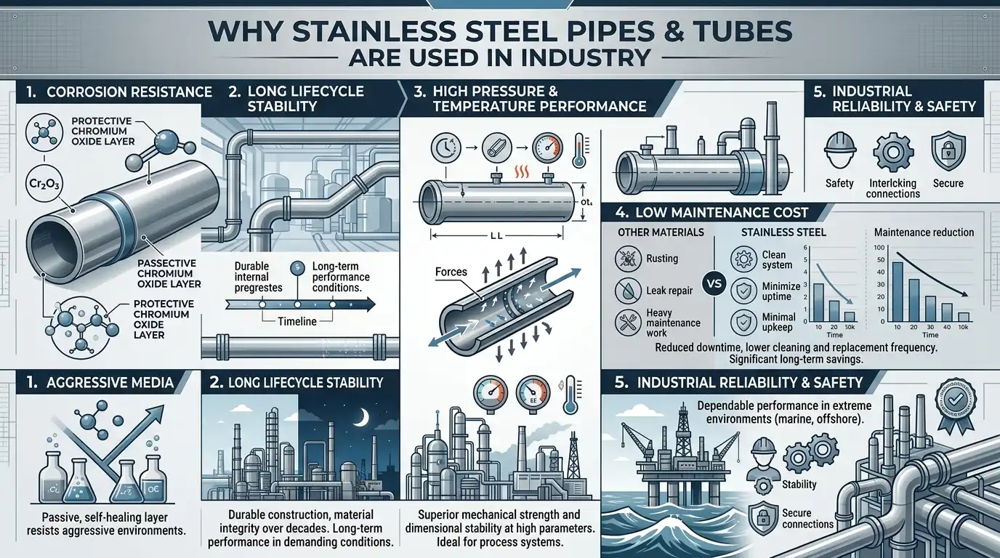
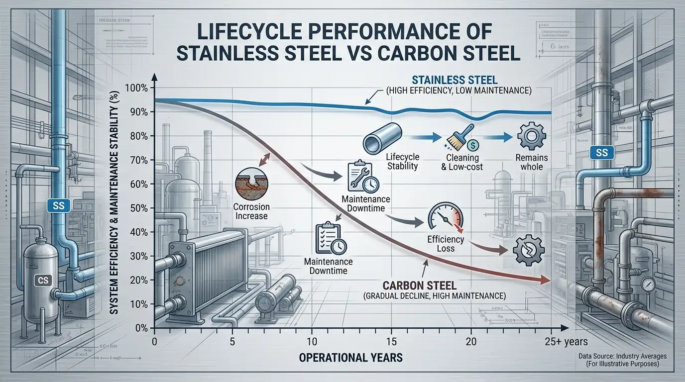

.png)
Stainless steel pipes and tubes are widely used across global industrial systems because they offer long-term operational stability in environments where material failure directly impacts safety, efficiency, and production continuity. At Steel Emporium, our experience across multiple industrial supply chains shows that stainless steel is rarely the first material selected in new projects. Instead, its adoption usually comes after industries experience repeated operational inefficiencies with conventional materials such as carbon steel, coated steel systems, or alternative piping materials.
The real value of stainless steel is not only in its mechanical strength but in its ability to perform consistently over long operational cycles without frequent intervention. This consistency is especially critical in industries such as oil and gas, chemical processing, pharmaceuticals, marine engineering, desalination systems, and heavy manufacturing infrastructure where uninterrupted operation is essential.
To understand why stainless steel has become a global industrial standard, it is necessary to evaluate it through three foundational perspectives: how industrial systems fail, how stainless steel behaves at a material level, and how engineers apply it in real-world design conditions.

1. How Industrial Systems Fail When Material Selection Is Not Optimized
Industrial systems do not fail instantly in most real-world cases. Failure is usually a slow and progressive process that develops over time due to internal corrosion, chemical exposure, thermal cycling, and continuous mechanical stress. One of the most common observations in industrial environments is that systems appear structurally fine on the outside while internal degradation silently reduces efficiency.
At Steel Emporium, we have seen that the most critical failures are not sudden breakages, but long-term inefficiencies that go unnoticed during early operation. Internal corrosion gradually affects flow efficiency, increases pressure drop, and reduces overall system performance without immediate visible signs.
Another major factor is maintenance dependency. Many conventional piping systems require recurring interventions such as surface coating, joint inspection, and partial replacement. While each maintenance activity may seem minor, collectively they create operational interruptions that affect production continuity and increase hidden lifecycle costs.
Over time, industries begin to realize that material selection is not simply a procurement decision but a long-term engineering strategy that defines system reliability and operational predictability.
Why Corrosion Gradually Reduces System Efficiency Without Visible Warning
Corrosion in industrial piping systems is often misunderstood as a surface-level issue, but in reality it begins internally and progresses gradually. As corrosion develops inside the pipe, it slowly reduces the effective internal diameter, which directly impacts flow velocity and pressure stability.
This process is particularly dangerous in systems carrying chemically active fluids, seawater, or moisture-rich media. In such environments, corrosion accelerates due to continuous exposure, but it remains hidden until performance degradation becomes noticeable at the system level.
In practical terms, this means engineers often detect the problem only after efficiency has already dropped significantly, making early intervention difficult and costly.
How Maintenance Dependency Affects Long-Term Operational Cost
Maintenance dependency is one of the most underestimated cost factors in industrial systems. While initial installation costs are usually calculated carefully, recurring maintenance costs are often distributed over time and not fully accounted for in lifecycle analysis.
In carbon steel or coated systems, maintenance is not optional but necessary to maintain operational integrity. This includes periodic inspections, protective coating applications, welding repairs, and partial replacements.
Each of these activities requires system downtime, labor coordination, and operational disruption. Over long periods, these indirect costs often exceed the initial material investment, making the system economically inefficient despite low upfront cost.
Why Engineering Decisions Shift Toward Lifecycle Stability
In modern industrial procurement, decision-making is increasingly shifting from purchase cost evaluation to lifecycle performance evaluation. Engineers are no longer focusing solely on initial material cost but are analyzing long-term operational behavior, risk exposure, and system reliability.
This shift occurs when industries experience repeated failures or inefficiencies that affect production continuity. Once operational downtime becomes financially significant, reliability becomes more important than short-term savings.
This is one of the primary reasons stainless steel adoption continues to increase across global industrial systems.

2. Why Stainless Steel Performs Differently in Industrial Environments
The performance advantage of stainless steel is rooted in its metallurgical composition. Unlike conventional metals, stainless steel contains chromium as a key alloying element. When exposed to oxygen, chromium reacts to form a passive oxide layer on the surface, which acts as a protective barrier against corrosion.
What makes this mechanism particularly effective is that it is not a static coating. It is a self-regenerating layer that continuously reforms when damaged, ensuring long-term protection even under aggressive industrial conditions.
This behavior allows stainless steel to maintain structural integrity even in environments where moisture, chemicals, and temperature variations are constantly present.
How Chromium-Based Passive Layer Ensures Continuous Protection
The chromium oxide layer is extremely thin but highly stable. It forms a continuous barrier between the metal surface and external corrosive agents such as oxygen, water, and industrial chemicals.
Unlike paint or external coatings, this protective layer is not applied externally and does not degrade in the same way. Even if the surface is scratched or mechanically damaged, the layer naturally reforms when exposed to oxygen.
This self-healing capability is what makes stainless steel highly reliable in long-term industrial applications.
Why Stainless Steel Maintains Stability Under Industrial Operating Conditions
Industrial environments rarely operate under fixed conditions. Temperature fluctuations, chemical exposure, and moisture variation are common across most processing systems.
Stainless steel maintains stability because its internal composition resists rapid chemical or structural degradation under these combined stresses. It does not rely on external protective systems, which significantly reduces maintenance dependency.
This stability makes it suitable for continuous operation systems where consistent material performance is essential for operational safety and efficiency.
How Material Composition Defines Engineering Predictability
One of the most important aspects of engineering design is predictability. Systems must behave consistently over time to ensure safe and efficient operation.
Stainless steel provides this predictability because its performance remains stable across a wide range of operating conditions. This allows engineers to design systems with greater confidence in long-term reliability and reduces uncertainty in lifecycle performance forecasting.
3. The Engineering Difference Between Stainless Steel Pipes and Tubes
Although stainless steel pipes and tubes are often used interchangeably in general discussions, they are fundamentally different in engineering design, dimensional standards, and application behavior.
A stainless steel pipe is primarily designed for fluid transport systems. It follows Nominal Pipe Size (NPS) and schedule-based thickness standards, which makes it suitable for applications where pressure handling and flow capacity are the primary design considerations.
A stainless steel tube, on the other hand, is designed for precision and structural applications. It is defined by exact outer diameter and wall thickness, which allows tighter tolerances and higher dimensional accuracy required in mechanical and structural systems.
How Pipes Are Designed for Pressure and Flow-Based Systems
Pipes are engineered specifically for transporting fluids such as water, oil, gas, steam, and chemicals. Their design prioritizes pressure containment and flow efficiency rather than dimensional precision.
This makes them ideal for large-scale industrial pipeline systems where long-distance fluid transport is required and system reliability depends on pressure stability rather than structural accuracy.
How Tubes Are Designed for Precision and Structural Applications
Tubes are used in applications where dimensional precision is critical. This includes mechanical frameworks, heat exchangers, instrumentation systems, automotive components, and equipment fabrication.
Their tight tolerances ensure accurate alignment and structural consistency, which is essential in engineered systems where even small deviations can affect performance.
Why Understanding Pipe vs Tube Difference Is Critical in Engineering Design
Confusing pipes and tubes can lead to engineering inefficiencies such as improper fitment, structural misalignment, or pressure imbalance in designed systems. This often results in redesign work, increased project cost, or reduced operational efficiency.
At this stage of understanding, engineers typically begin evaluating material systems in greater depth to understand how different piping materials behave under real industrial conditions. This naturally leads to a deeper evaluation of stainless steel pipes & tubes vs carbon steel pipes & tubes, where lifecycle performance, corrosion resistance, and long-term operational reliability become key decision factors in material selection.

4. How Engineers Decide Between Pipes and Tubes in Real Applications
The selection between pipes and tubes is not based on material preference but on functional requirements of the system. Engineers evaluate operational conditions, environmental exposure, pressure requirements, and design objectives before making a selection.
When systems involve continuous fluid movement such as oil, gas, steam, or water, pipes are generally selected because they provide stable pressure handling and reliable flow performance over long distances.
When systems require structural integrity, precision assembly, or mechanical support, tubes are preferred due to their tighter tolerances and controlled dimensional specifications.
Why Fluid Transport Systems Depend on Pressure Stability
Fluid systems operate under continuous pressure conditions where even small fluctuations can affect flow efficiency and system safety. Pipes are designed to maintain consistent pressure performance over long operational cycles without deformation or efficiency loss.
Why Structural Systems Depend on Dimensional Accuracy
Structural systems require precise alignment and load distribution. Tubes provide the dimensional accuracy necessary to ensure mechanical stability and proper assembly behavior in engineered systems.
How Application Logic Determines Material Selection
Material selection is not universal. It depends on system function, environmental exposure, operational conditions, and performance expectations.
Industries such as oil and gas, pharmaceuticals, automotive manufacturing, and process engineering rely on this application-based decision logic to ensure long-term operational reliability and system safety.
5. Why Stainless Steel Remains the Standard Material in Industrial Systems
Stainless steel continues to be widely adopted in industrial systems because it provides consistent and predictable performance across diverse operating conditions. Unlike materials that degrade over time, stainless steel maintains structural stability throughout its lifecycle.
This long-term consistency reduces uncertainty in system behavior and allows engineers to design infrastructure with greater confidence in operational outcomes.
How Lifecycle Stability Improves Industrial Planning
Lifecycle stability allows engineers to predict system behavior over extended time periods. This reduces unexpected failures and improves operational planning accuracy across long-term projects.
Why Reliability Matters More Than Initial Cost
In industrial systems, downtime and operational failure often result in higher financial losses than material cost itself. This shifts engineering focus toward reliability, system stability, and lifecycle performance. Once technical validation is complete, procurement teams move toward evaluating certified supply options. At this stage, they assess industrial-grade Stainless Steel pipes & tube solutions used in chemical processing, marine systems, oil & gas infrastructure, and high-pressure applications where reliability and corrosion resistance are critical.
How Standardization Builds Engineering Trust
International standards such as ASTM, ASME, and EN ensure consistent material performance across global supply chains. This standardization builds engineering trust and ensures predictable outcomes in critical industrial applications.
Final Perspective
Stainless steel pipes and tubes are widely used not because they are premium materials, but because they provide stable, predictable, and long-term performance in demanding industrial environments. Their adoption is driven by real-world operational experience where reliability becomes more important than short-term cost savings. In industries where continuous operation, safety, and performance consistency are critical, stainless steel remains one of the most dependable engineering materials available today.